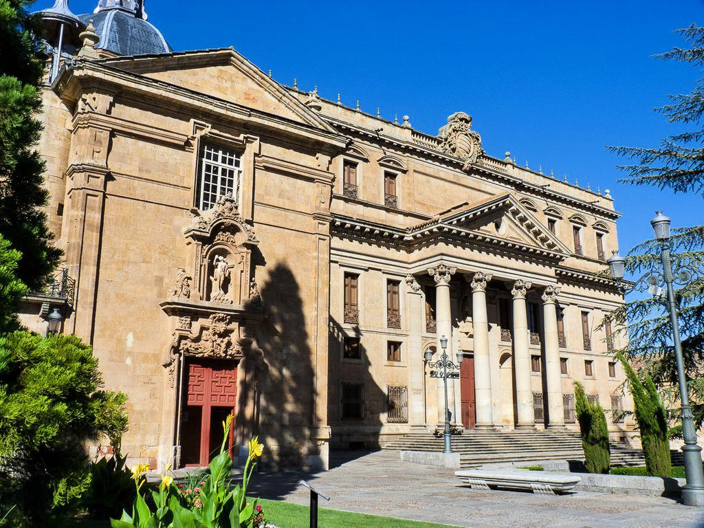
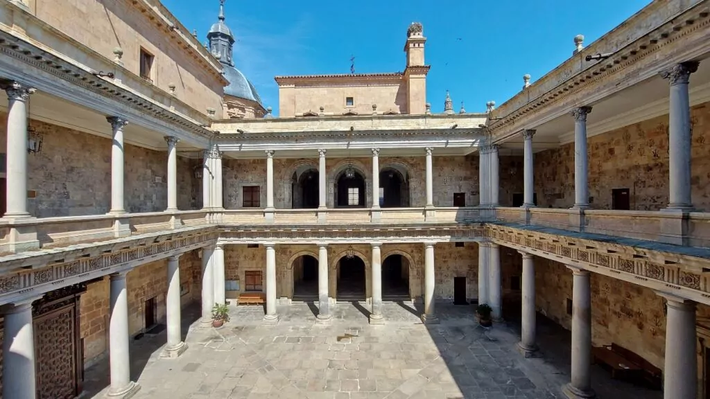
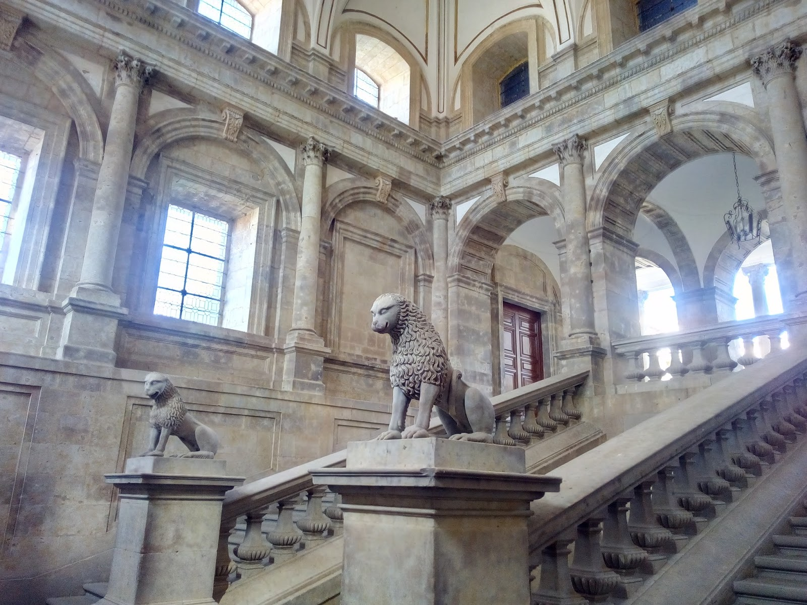
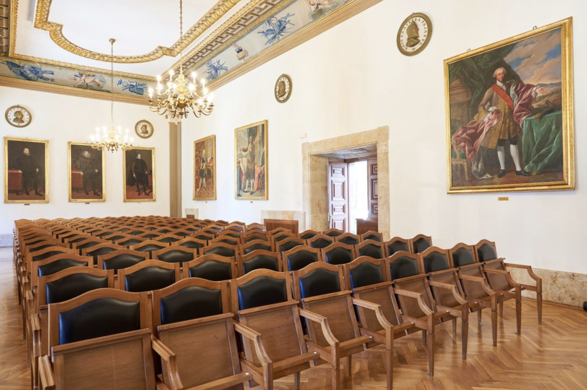
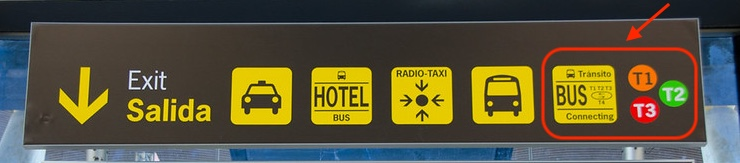
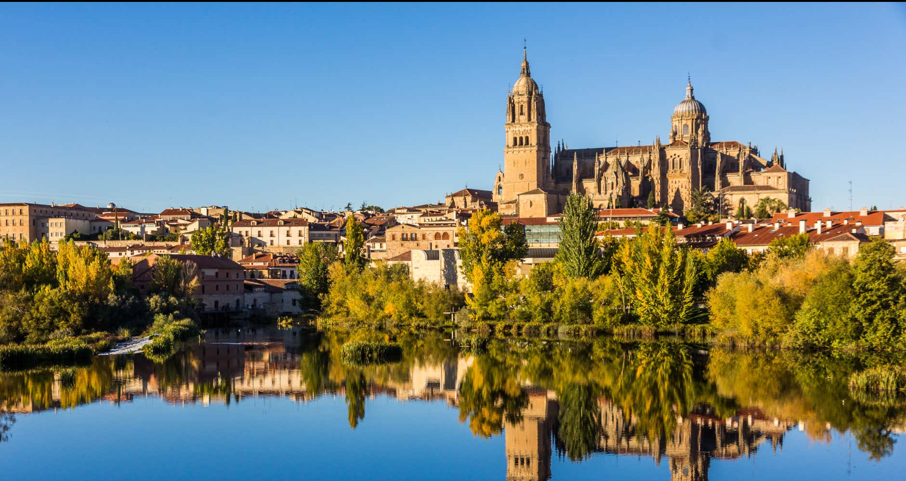
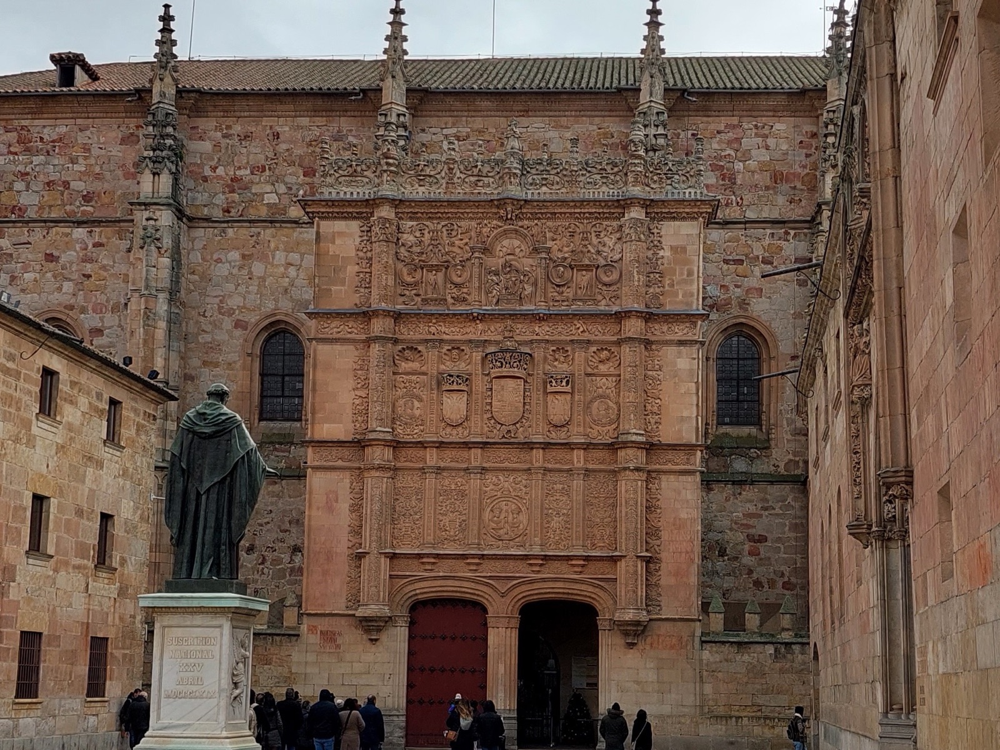
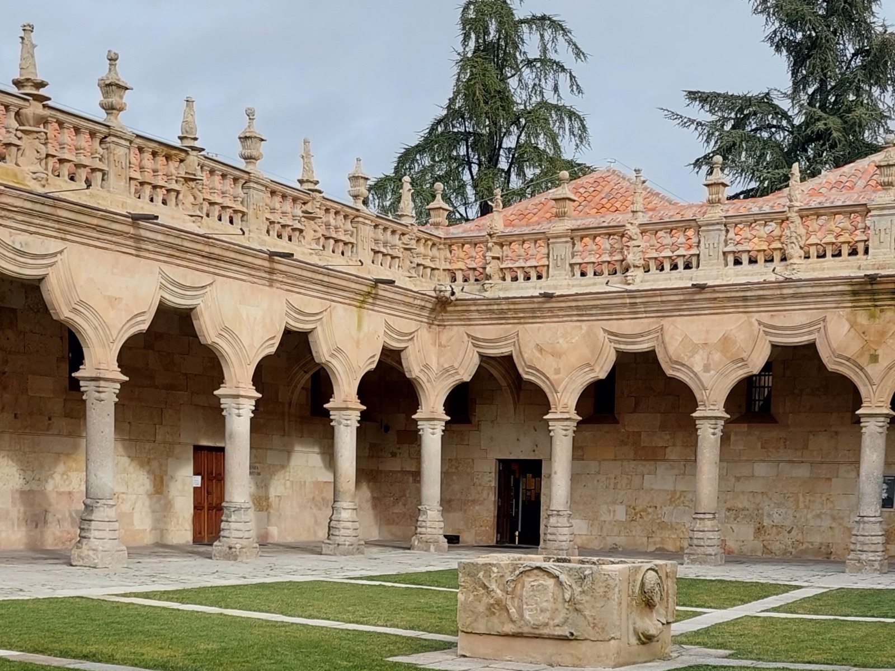

Salamanca · 5–9 April
ScrollThe 2027 FornaX collaboration meeting brings together members of the FornaX XMM-Newton Heritage Programme to review progress on the observations, catalogues and science projects, and to plan the next steps.
The 2027 meeting will be particularly important:
We stress the importance of attending the meeting in person: it makes the discussions much more effective. We are going to be working together for many years, and it is important to forge friendly professional links.
The main topics are:
A detailed programme will be published closer to the meeting.
The meeting takes place at the
Palacio de Anaya,
Facultad de Filología, Universidad de Salamanca.
Plaza de Anaya s/n, 37008 Salamanca, Spain.




See the venue on the map, together with our recommended visits.
The nearest major international airport is Madrid–Barajas (MAD). From there, the easiest way to reach Salamanca is by train.
* Arriving at Terminal 1, 2 or 3? These terminals are connected to T4 by a free shuttle bus. Follow the yellow “Bus Tránsito / Connecting” signs to the stop, and take the green bus showing “Bus Tránsito T1 → T2 → T3 → T4”.

A list of recommended hotels will be published.

Salamanca, in the region of Castilla y León, is home to one of the oldest universities in Europe. Its old town has been a UNESCO World Heritage Site since 1988. It is known for the golden sandstone of its buildings, which gives the city its nickname, La Dorada.
The Old and New Cathedrals, the Plaza Mayor, the university's historic buildings and the Roman bridge over the Tormes are all within walking distance of one another. The meeting venue, the Palacio de Anaya, stands on Plaza de Anaya, facing the New Cathedral.


Founded in 1218 by King Alfonso IX of León, the University of Salamanca is the oldest university in Spain still in operation. In the 16th century its scholars, known as the School of Salamanca, helped lay the foundations of international law and modern economics.
Its historic buildings are a short walk from the venue. The carved Plateresque façade of the Escuelas Mayores faces the Patio de Escuelas, and inside is the University's historic library.
The meeting itself takes place in the Palacio de Anaya, an 18th-century neoclassical building that was built for the Colegio Mayor de San Bartolomé and today houses the Faculty of Philology.
The Tormes river and the Roman bridge
Take a walk along the riverbanks and cross the Roman bridge on foot. From the far side you get the classic view of the old town and the cathedrals, like the photo above.
The Art Nouveau and Art Déco museum, in a modernist house with a striking stained-glass façade, built on the old city wall above the Tormes river.
A 16th-century Dominican convent with a spectacular Plateresque façade, carved like a giant stone altarpiece, and beautiful cloisters inside. A short walk downhill from the Cathedral.
The Cathedral and its towers (Ieronimus)
Climb the medieval towers of Salamanca Cathedral, with terraces, the bell chamber and a walkway inside the New Cathedral, and views over the whole city. Beautiful both by day and at night, and there are dedicated night visits. Entry is limited, so book online.
Find The astronaut: an astronaut carved in stone among the decorations of the Puerta de Ramos, a side door of the New Cathedral, added during its 1992 restoration.
Find The devil eating ice cream: on the same door, look for a little horned creature licking an ice-cream cone, another playful addition from the 1992 restoration.
The University's historic main building, behind the carved façade on the Patio de Escuelas, with its old lecture halls and historic library.
Find The frog: a tiny frog hidden somewhere among the carvings of the façade. Tradition says students who spot it will pass their exams.
The University's other historic building, just off the Patio de Escuelas.
Find El Cielo de Salamanca: a late 15th-century painted sky showing constellations and signs of the zodiac. It once decorated the vault of the old university library and is now on display here. A must for astronomers!
A late 15th-century palace whose façade is covered in hundreds of carved scallop shells. Today it is a public library, so you can step inside to see its Gothic courtyard. It stands opposite the Clerecía, a few minutes' walk from the Patio de Escuelas.
The heart of the city: an 18th-century Baroque square surrounded by arcades and cafés (it is the square in the photo at the top of this page). Come back after dark, when it is lit up.
The city's main shopping streets, both starting at the Plaza Mayor. Good for a stroll, shops, tapas and cafés.
Don't miss Iglesia de San Marcos: at the far end of Calle Zamora, a small Romanesque church with an unusual round floor plan.
★ The venue, Palacio de Anaya · 1 Numbers match the list above. Click a pin for its name.
As part of the meeting, participants are invited to join an excursion. There are two possible destinations: participants will be asked which one they prefer, and only one of them will take place.
| Date | Thursday 8 April 2027 |
|---|---|
| Departure | To be announced |
| Cost | To be announced |
Registration is not open yet. Come back to this page for updates.